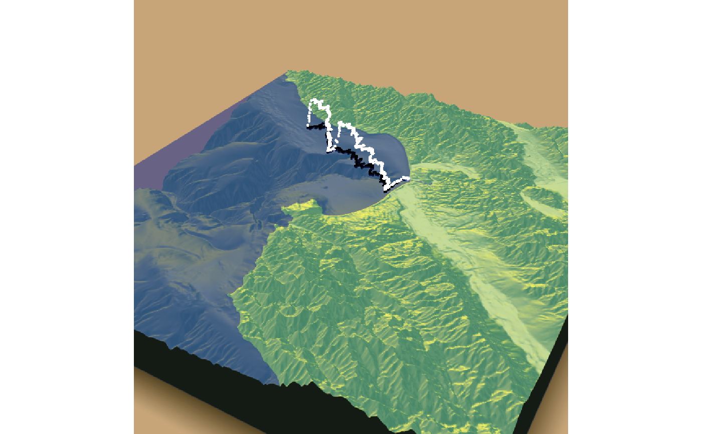
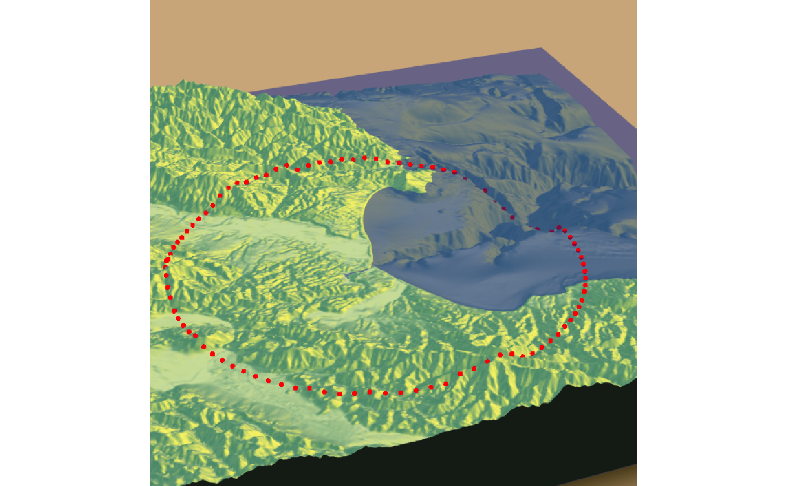
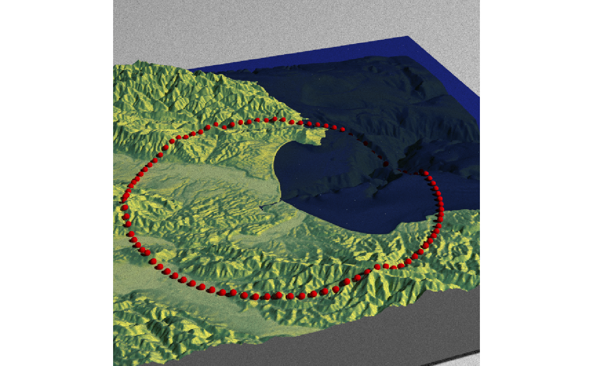

Adds 3D datapoints to the current scene, using latitude/longitude or coordinates in the reference system defined by the extent object. If no altitude is provided, the points will be elevated a constant offset above the heightmap. If the points goes off the edge, the nearest height on the heightmap will be used.
render_points( extent = NULL, lat = NULL, long = NULL, altitude = NULL, zscale = 1, heightmap = NULL, size = 3, color = "black", offset = 5, clear_previous = FALSE )
Arguments
| extent | A `raster::Extent` object with the bounding box of the displayed 3D scene. |
|---|---|
| lat | Vector of latitudes (or other coordinate in the same coordinate reference system as extent). |
| long | Vector of longitudes (or other coordinate in the same coordinate reference system as extent). |
| altitude | Elevation of each point, in units of the elevation matrix (scaled by zscale). |
| zscale | Default `1`. The ratio between the x and y spacing (which are assumed to be equal) and the z axis in the original heightmap. |
| heightmap | Default `NULL`. Automatically extracted from the rgl window--only use if auto-extraction of matrix extent isn't working. A two-dimensional matrix, where each entry in the matrix is the elevation at that point. All points are assumed to be evenly spaced. |
| size | Default `3`. The point size. |
| color | Default `black`. Color of the point. |
| offset | Default `5`. Offset of the track from the surface, if `altitude = NULL`. |
| clear_previous | Default `FALSE`. If `TRUE`, it will clear all existing points. |
Examples
# \donttest{ #Starting at Moss Landing in Monterey Bay, we are going to simulate a flight of a bird going #out to sea and diving for food. #First, create simulated lat/long data set.seed(2009) moss_landing_coord = c(36.806807, -121.793332) x_vel_out = -0.001 + rnorm(1000)[1:300]/1000 y_vel_out = rnorm(1000)[1:300]/200 z_out = c(seq(0,2000,length.out = 180), seq(2000,0,length.out=10), seq(0,2000,length.out = 100), seq(2000,0,length.out=10)) bird_track_lat = list() bird_track_long = list() bird_track_lat[[1]] = moss_landing_coord[1] bird_track_long[[1]] = moss_landing_coord[2] for(i in 2:300) { bird_track_lat[[i]] = bird_track_lat[[i-1]] + y_vel_out[i] bird_track_long[[i]] = bird_track_long[[i-1]] + x_vel_out[i] } #Render the 3D map montereybay %>% sphere_shade() %>% plot_3d(montereybay,zscale=50,water=TRUE, shadowcolor="#40310a", watercolor="#233aa1", background = "tan", theta=210, phi=22, zoom=0.20, fov=55) #Pass in the extent of the underlying raster (stored in an attribute for the montereybay #dataset) and the latitudes, longitudes, and altitudes of the track. render_points(extent = attr(montereybay,"extent"), lat = unlist(bird_track_lat), long = unlist(bird_track_long), altitude = z_out, zscale=50,color="white") render_snapshot()#We'll set the altitude to zero to give the tracks a "shadow" over the water. render_points(extent = attr(montereybay,"extent"), lat = unlist(bird_track_lat), long = unlist(bird_track_long), altitude = 0, zscale=50, color="black") render_camera(theta=30,phi=35,zoom=0.45,fov=70) render_snapshot()#Remove the points: render_points(clear_previous=TRUE) # Finally, we can also plot just GPS coordinates offset from the surface by leaving altitude `NULL` # Here we plot a circle of values surrounding Moss Landing. This requires the original heightmap. t = seq(0,2*pi,length.out=100) circle_coords_lat = moss_landing_coord[1] + 0.3 * sin(t) circle_coords_long = moss_landing_coord[2] + 0.3 * cos(t) render_points(extent = attr(montereybay,"extent"), heightmap = montereybay, lat = unlist(circle_coords_lat), long = unlist(circle_coords_long), zscale=50, color="red", offset=100, size=5) render_camera(theta = 160, phi=33, zoom=0.4, fov=55) render_snapshot()#And all of these work with `render_highquality()` render_highquality(point_radius = 3, clamp_value=10)